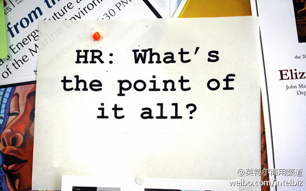

很奇怪的现象：在维护形象上，公共帐号还比不上个人帐号。是官微后面的微博运营公司太烂的缘故？//@王震微众:@英特尔商用频道 这个账号完全没有节操了，一个美国品牌，经常给人群发垃圾私信，这又用小水号到处@ 别人，相当于在中国的微博用户上签写“英特尔到此一游”，给美国品牌丢人吗？@英特尔商用频道:当HR遇上大数据，会碰撞出什么样的火花？一家叫Transcom的公司，为扭转员工流失率过高的局面，使用大数据进行员工行为分析，发现了很多有趣的结论，比如在“诚实”方面得分高的员工，稳定性会比其他员工高20%-30%。最终这些结论让Transcom员工流失的数量下降 20%。网页链接 #IT商业加油站# 